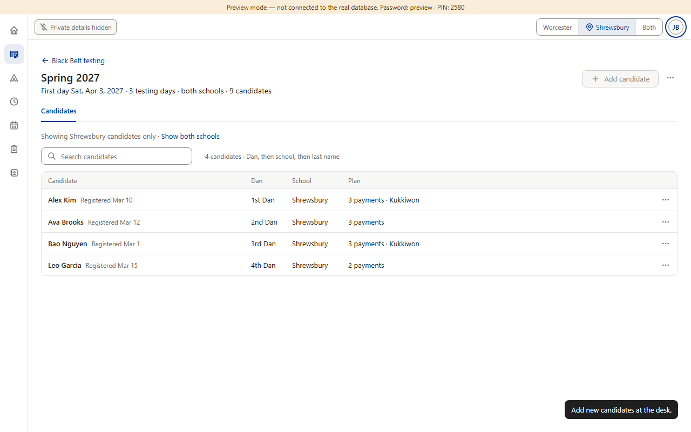
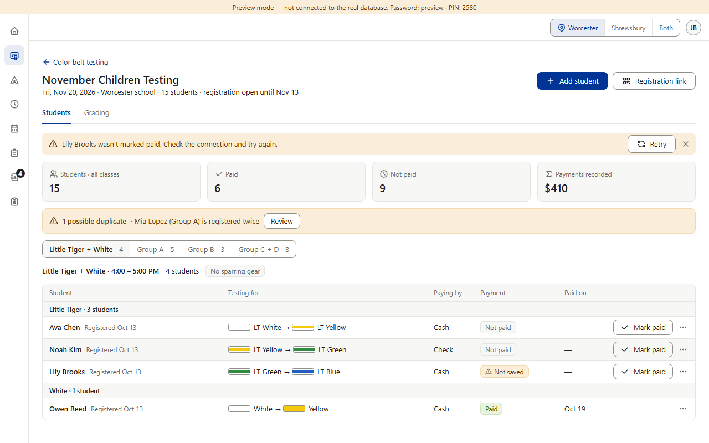
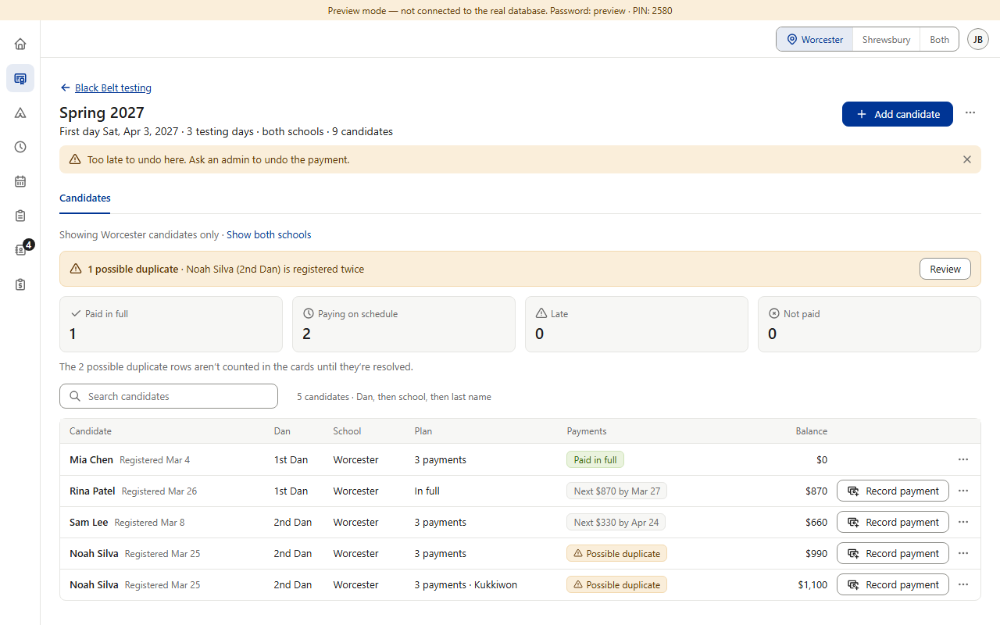
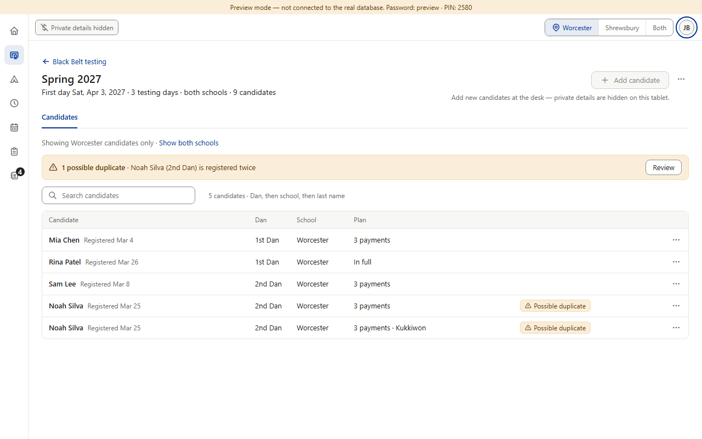

Drift in Black Belt. The rulebook says a problem message never closes by itself (§3.5, §8). Color Belt, Star, Camps and Finance follow it with the amber bar that stays. Black Belt shows its refusals in the 5-second toast instead — “Too late to undo here. Ask an admin.”, “Only an admin can do that…”, “This candidate was deleted.”, and why a button is grayed. Its own plan said banners; nobody decided toasts. (Prospects' “That prospect no longer exists.” was approved as a toast, v0.615.) (Preview screenshots at PC size · fake data)



